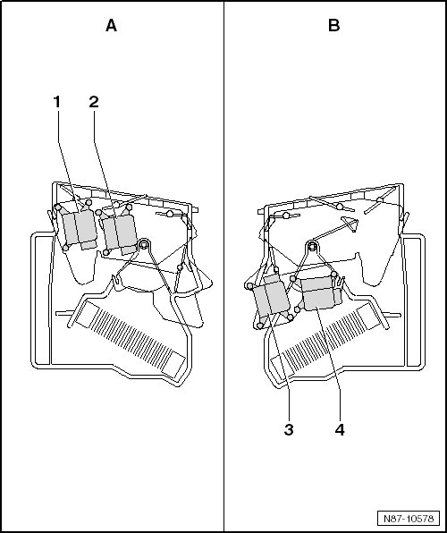

A/C Unit Motor Locations, Manual A/C
A/C Unit Motor Locations, Manual A/C
• - A - shows the motor location on the left side of the A/C unit.
• - B - shows the motor location on the right side of the A/C unit.

1 Defroster Door Motor (V107)
• With the Defroster Door Motor Position Sensor (G135)
• Removing and installing, refer to--> [ Defroster Door and Front Air Distribution, Manual A/C System ] Service and Repair
2 Front Air Distribution Motor (V145)
• with the Front Air Distribution Motor Position Sensor (G470)
• Removing and installing, refer to --> [ Defroster Door and Front Air Distribution, Manual A/C System ] Service and Repair
3 Footwell Door Motor (V261)
• With the Footwell Door Motor Position Sensor (G468)
• Removing and installing, refer to --> [ Footwell and Temperature Regulator Door, Manual A/C System ] Service and Repair
4 Temperature Regulator Door Motor (V68)
• With Temperature Regulator Door Motor Position Sensor (G92)
• Removing and installing, refer to --> [ Footwell and Temperature Regulator Door, Manual A/C System ] Service and Repair